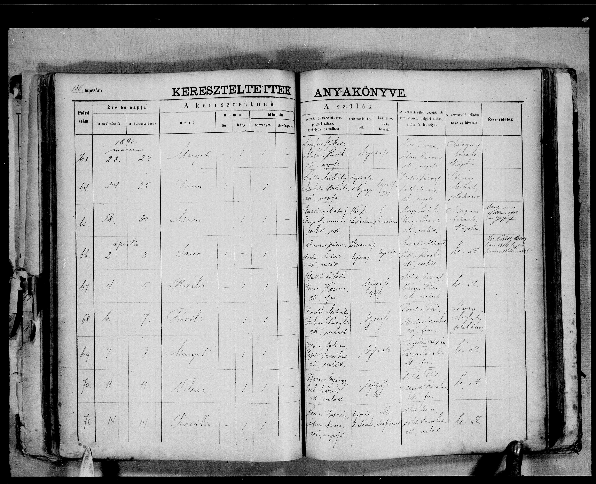
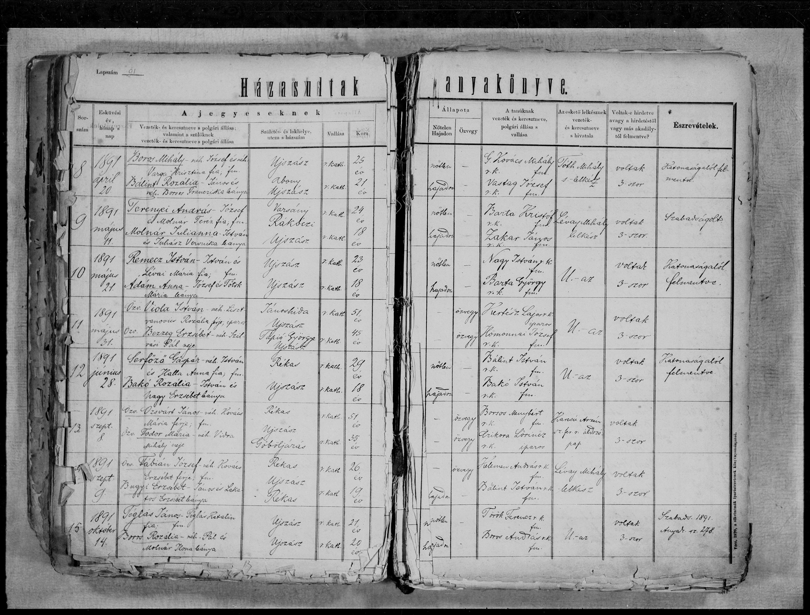

Kutatás menete
Kedvcsináló
Családfánk felkutatása során olyan dolgokat tudhatunk meg családunkról, amit addig egyáltalán nem is gondoltunk volna. Ezért is nagyon érdekes belekezdeni ebbe a hobbiba, kiderülhet esetleg, hogy egy rég elfeledett ősünk 48’-as vitéz volt, vagy éppen a falu főbírája.
Ha ráadjuk a fejünket, hogy belekezdünk családunk feltérképezésébe, akkor először mindenképpen érdemes a még élő idősebb rokonainkat körbekérdezni, ők mit tudnak a családról. A legizgalmasabb információkkal mindenképpen ők szolgálhatnak, hiszen mi csak papírokon látjuk majd leírva őseink nevét, ők viszont lehet néhányukra még emlékeznek is.
Hogy kezdjek neki?
Kutatásunkat célszerű a FamilySearch nevű ingyenes online adatbázisban kezdenünk, ugyanis itt beszkennelve fel vannak töltve az állami, illetve az egyházi anyakönyvek is. A katolikus (és néhol a református is) anyakönyvek „indexelt” anyakönyvek, legalábbis ami a kereszteléseket (értsd: születéseket) illeti. Az „indexelt” kulcsszó alatt azt értjük, hogy az adott személyre rákereshetünk név szerint, és a keresőmotor kidobja azokat a találatokat, amelyek megfelelnek a keresési feltételeinknek. Ahhoz, hogy el tudjunk kezdeni ezen az oldalon keresgélni, regisztrálnunk kell egy ingyenes fiókot.
Ha elkészítettük a felhasználónkat, és bejelentkeztünk, kezdődhet a kutatás. Az első láncszemünk, tehát az első keresendő rokonunk a legideálisabb esetben 1895 előtt született. Az 1895 azért kritikus pont, mert ebben az évben vezették be az állami anyakönyvezést. Ezek az anyakönyvek nincsenek még kiindexelve, így jóval nehezebb dolgunk van, hiszen, ha nem tudjuk biztosan ősünk születési dátumát, akkor nagyon sok oldalt át kell lapoznunk. Viszont, ha megtaláljuk ősünket, akár 1895 előtt, akár 1895 után született, egy ilyen vagy ehhez hasonló oldalon fogjuk találni magunkat, amiből rengeteg információ ki fog derülni. Lényegében a családfakutatás nagy része az anyakönyvek révén fog összeállni, ritkább esetben tudunk meg több információt ősünkről más forrásokból.
{kind=link}
Hurrá! Kutatok!
Itt látható egy születési anyakönyv, az én dédapám (Ozsvárt János) keresztelési anyakönyvi bejegyzése. Amit nagyon érdemes tüzetesen megnézni, az a szülőkhöz írt rubrika, mivel ők lesznek ezentúl a fontosabb személyek. Most, hogy megvan az első ismert ősünk, mehetünk tovább, kereshetjük a szülőket. Ezt olyan módon célszerű csinálni, (1895 előtt vagyunk már) hogy rákeresünk a szülőpáros nevére a FamilySearch adatbázisban, ily módon megtudhatjuk, hogy a párnak mikor születtek gyermekei. Ez azért fontos, mert ha megtudjuk, mikor született az első gyermek, sokkal könnyebb lesz megtalálni a szülők házassági anyakönyvét. Ilyenkor jön a lapozgatás, sajnos házasságra nem tudunk keresni, de ilyenkor általában nem kell sok oldalt átnézni, könnyedén megtalálhatjuk a házassági bejegyzést.
{kind=link}
Ha megtaláltuk a házasságot, akkor egy ilyen oldalt fogunk látni, amelyen megint sok információt találunk. Látjuk például a házasodók korát (vigyázat, ez semmit sem jelent, igazából nagyon ritkán valós az itt leírt kor!), a házasodók szüleit, tanúkat. Kutatásunk innen megint egy könnyebb fázisba ér, rákeresünk a házasodókra az adatbázisban, és ha nagyjából stimmel a koruk (4-5 éven belüli különbség legfeljebb), és a szülők is megegyeznek a házassági anyakönyvön látottakkal, akkor mehetünk is tovább. És így megy ez, körforgásban, amíg egyszer elakadunk, vagy eljutunk az 1700-as évekig, nagyjából eddig tudunk eljutni, hogyha sehol sem ütközünk falba. Ilyen falak például: A házasságnál nem jegyezték le Tóth Anna szüleit, akiből 10 született ugyanabban az időben a faluban. Egyszerűen akárhogy keressük az adott személyt, sehol sem találjuk. Nem jegyezték le az anya vezetéknevét stb. Ha más vallású ősünk van, például református vagy evangélikus, akkor úgynevezett névmutatókból tájékozódhatunk – ezek az anyakönyvek ritkábban vannak kiindexelve. A névmutatók ábécé sorrendben tartalmazzák a születéseket, házasodásokat (ilyenkor a férj vezetékneve a fontos az ábécé sorrendnél!), és a halálozásokat.